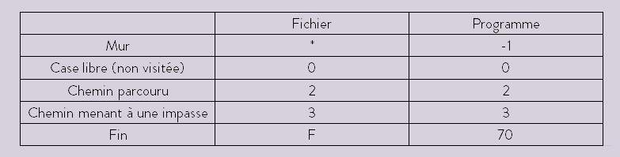

Réalisé dans le cadre d'un BTS SIO. (Stage au laboratoire Lab-STICC)
Ce stage s'est déroulé en deux parties, du 3/12/2018 au 28/12/2018 puis du 25/02/2019 au 05/04/2019.
Durant la première partie, j'étais chargé de réaliser une interface graphique en C en utilisant la librairie
graphics.h, sous environnement Debian 9.
La deuxième partie, en collaboration avec Malik Rebray, un collègue du BTS, couvre le pathfinding et l'orientation d'un objet dans un labyrinthe.
Le rapport de stage détaillé pour la deuxème partie peu être consulté ici.
La consigne complète: créer une interface graphique afin de représenter un robot dans un labyrinthe.
Ce dernier devant être capable d'être généré par un fichier texte externe.
Puis, coder une fonction de déplacement du robot au clavier, respectant les lois de la physique. (passage à travers les murs interdits !)
Dans un premier temps, je me suis familiarisé avec la librairie en attaquant la création de la grille qui accueillerait plus tard le labyrinthe.
Ensuite, j'ai crée la représentation de notre robot ainsi que des variantes selon la direction dans laquelle il se dirigerait.
La prochaine étape était de créer des murs, à travers lesquels le robot ne pouvait pas se situer. Les premiers test incluaient un remplissage manuel du
labyrinthe, n'ayant pas encore codé la génération par fichier.
Le remplissage par fichier se présente comme ceci:
On spécifie le nombre de lignes puis de colones, puis on effectue la représentation ligne par ligne des murs/espaces libres.
A savoir que les murs sont représentés par des "*" et les cases vides par des "0".
Une fois les murs et la génération par fichier terminés, il fallait donner des jambes (enfin une roue) au robot, et intégrer un déplacement au clavier.
D’abord, nous nous sommes dirigés vers la réalisation d’une fonction récursive, permettant au robot de vérifier successivement si les cases au Nord, Sud, Est et Ouest de sa position sont :
- Dans le labyrinthe
- Un mur
- Un chemin marqué comme une impasse auparavant
Dans le cas où un chemin libre mène à une impasse, la fonctionnalité récursive remonte la pile d’appel de fonction (backtracking) jusqu’à la dernière intersection, tout en marquant les cases concernées comme menant à une impasse.
Le labyrinthe est représenté par un fichier texte, où les éléments sont traduits comme ceci :

Ensuite, afin de charger un fichier externe (ou de sauvegarder le labyrinthe actuel dans un fichier), nous avons fait évoluer l'interface grapique.
L'ajout d'un bouton "charger" ainsi que "sauvegarder" a donc été fait.
Pour afiner l'expérience utilisateur, nous avons également rajouté un support de la souris pour les déplacement.
Auparavant, seul un déplacement via les touches du clavier était possible, nous avons donc opté pour l'utilisation de boutons à la souris en tant que mode alternatif.
Une fois notre algorithme récursif fonctionnel, nous avons proposé l’implémentation de l’algorithme de Dijkstra afin de déterminer le chemin le plus court dans le labyrinthe.
L’approche du calcul du chemin étant différente, il n’était plus pertinent d’avoir les fonctions « charger » et « sauvegarder » implémentées précédemment.
Nous avons donc supprimé entièrement le bouton « sauvegarder », et avons remplacé la fonction de chargement en une simple réinitialisation du labyrinthe.
Nous avons également ajouté la notion de difficulté de terrain (n’ayant pas d’intérêt dans la version récursive) et une coloration adéquate des cases concernées.
Et voilà, si tel Roboto vous cherchez le chemin le plus court, voici celui pour me contacter :)